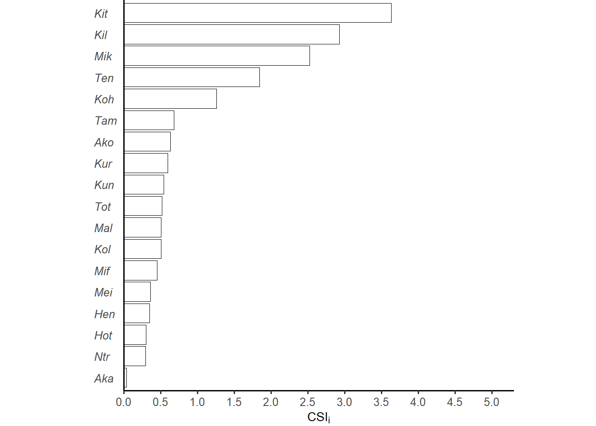
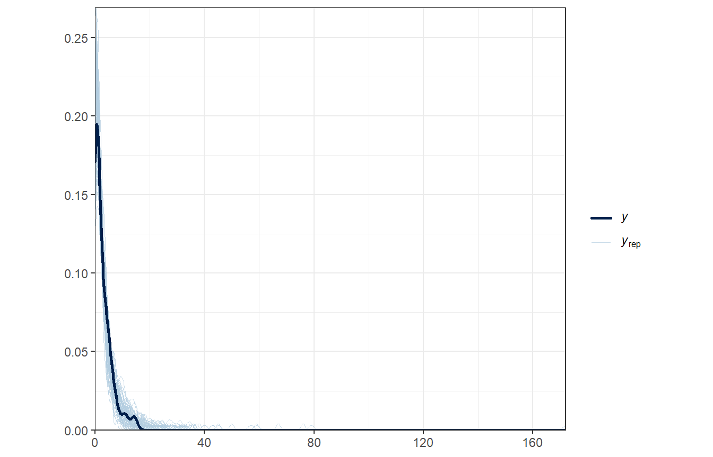
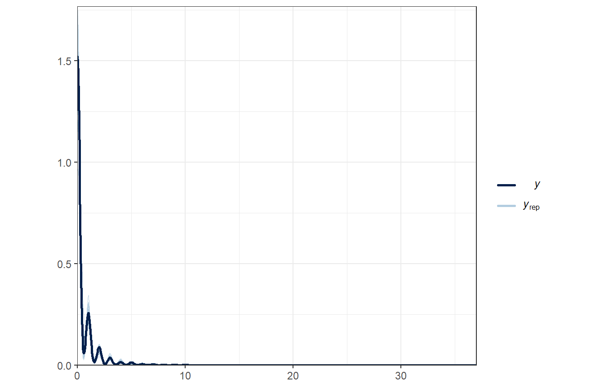

13 群れ本体で確認された日数割合と被攻撃頻度
第9章で、TYとITが群れにいない次の日にはメスが群れを離れる確率が高くなることが示唆された。第12章の結果と合わせると、これはメスが攻撃される確率が高くなる日に群れを離れていたことを示唆している。もしそうであれば、群れを離れることが多かったメスほど群れの中で攻撃されることが少なかったはずである。
そこで、以下では
13.1 データの加工
まず2019年~2021年の交尾期について、各メスの確認日数割合、発情日数割合、平均被攻撃頻度を調査期間ごとに算出する。前章で各観察日の群れ本体における各メスの被攻撃頻度と発情の有無については算出していたので(agg_daily_each)、これをそのまま利用できる。
## 日ごとの被攻撃頻度と発情日数割合の算出
agg_daily_each %>%
filter(presence == "1") %>%
group_by(study_period, femaleID) %>%
summarise(mean_agg = mean(rate_agg),
prop_rs = mean(rs2),
sum_agg = sum(rate_agg),
N = n()) -> mean_agg_each
## 各個体が観察された日の群れ観察時間
no_female_over0.5 %>%
select(groupID, dur) %>%
left_join(group_all %>% select(-c(TY,IT,KR,LK,KM,TG))) %>%
select(-(start:fin)) %>%
## 縦型にする
pivot_longer(Kur:Yun,
names_to = "femaleID",
values_to = "presence") %>%
left_join(att, by = c("femaleID", "study_period")) %>%
## 2019~2021の交尾期のみ
filter(study_period != "m18" & !str_detect(study_period, "nm")) %>%
## 6歳以上のメスのみを抽出
filter(age >= 6) %>%
filter(presence == 1) %>%
group_by(study_period, femaleID) %>%
summarise(dur_sum = sum(dur)) %>%
ungroup() -> dur_sum
## 各調査期間にTY/ITと共に観察された日数
no_female_over0.5 %>%
select(groupID) %>%
left_join(group_all %>% select(-c(TY,IT,KR,LK,KM,TG))) %>%
## 縦型にする
pivot_longer(Kur:Yun,
names_to = "femaleID",
values_to = "presence") %>%
left_join(att, by = c("femaleID", "study_period")) %>%
## 6歳以上のみ抽出
filter(age >= 6) %>%
filter(femaleID != "Kur") %>%
left_join(TYIT_presence %>% mutate(date = as_date(date)),
by = c("date", "groupID")) %>%
mutate(WithTY = ifelse(TY == 1 & presence == 1,1,0),
WithIT = ifelse(IT == 1 & presence == 1,1,0)) %>%
filter(presence == 1) %>%
group_by(study_period, femaleID) %>%
summarise(prop_TY = mean(WithTY),
prop_IT = mean(WithIT),
N_TY = n(),
N_IT = n(),
sum_TY = sum(WithTY),
sum_IT = sum(WithIT)) %>%
ungroup() %>%
replace_na(list(prop_IT = 0)) -> prop_TYIT
## 確認日数割合と結合
no_female_over0.5 %>%
select(groupID, dur) %>%
left_join(group_all %>% select(-c(TY,IT,KR,LK,KM,TG))) %>%
select(-(start:fin)) %>%
## 縦型にする
pivot_longer(Kur:Yun,
names_to = "femaleID",
values_to = "presence") %>%
left_join(att, by = c("femaleID", "study_period")) %>%
## 2019~2021の交尾期のみ
filter(study_period != "m18" & !str_detect(study_period, "nm")) %>%
## 6歳以上のメスのみを抽出
filter(age >= 6) %>%
## 個体追跡情報を結合
left_join(focal_summary, by = c("date", "femaleID")) %>%
replace_na(list(dur_focal = 0)) %>%
group_by(study_period, femaleID) %>%
summarise(sum_presence = sum(presence),
prop_presence = mean(presence),
N_date = n(),
rank = mean(rank),
age = mean(age),
sum_dur = sum(dur),
sum_focal = sum(dur_focal)) %>%
ungroup() %>%
## 途中で死亡したKurは除く
filter(femaleID != "Kur") %>%
## 攻撃頻度と発情日数割合などを結合
left_join(mean_agg_each,
by = c("study_period","femaleID")) %>%
left_join(dur_sum,
by = c("study_period","femaleID")) %>%
left_join(prop_TYIT,
by = c("study_period","femaleID")) %>%
mutate(prop_focal = sum_focal/dur_sum) %>%
left_join(CSI_TY %>% select(subject, CSI_TY),
by = c("femaleID" = "subject")) %>%
left_join(CSI_IT %>% select(subject, CSI_IT),
by = c("femaleID" = "subject")) %>%
group_by(study_period) %>%
mutate(rank_scaled = rank/max(rank)) %>%
ungroup() %>%
mutate(rs_std = standardize(prop_rs),
prop_std = standardize(prop_presence),
age_std = standardize(age),
rank_std = standardize(rank_scaled),
focal_std = standardize(prop_focal),
prop_TY_std = standardize(prop_TY),
prop_IT_std = standardize(prop_IT),
id = 1:n(),
CSI_TY_std = standardize(CSI_TY),
CSI_IT_std = standardize(CSI_IT)) -> female_presence_aggデータは以下の通り。
13.2 モデリング1
モデルは以下の通り。応答変数の分布としてはガンマ分布を用いる。ガンマ分布については、 Dunn & Smyth (2018) に詳しい。
\(i\)はデータ番号、\(j\)はメスIDを表す。
mean_agg: 調査期間ごとの平均被攻撃頻度(回/h)
prop_presence: 確認日数割合
prop_rs: 調査期間ごとの発情日数割合
rank_scaled: 0~1に変換された順位
age: 年齢
m20: 2020年交尾期かを表すダミー変数
m21: 2021年交尾期化を表すダミー変数
\[ \begin{aligned} & mean_agg_i \sim Gamma(\mu_i, \phi) \\ &log(\mu_i) = \beta_0 + \beta_1 \times prop\_presence_i + \beta_2 \times prop\_rs_i + \beta_3 \times rank\_scaled_i + \beta_4 \times age_i + \beta_5 \times m20 + \beta_6 \times m21 + r_j\\ &r_j \sim Normal(0, \sigma)\\ &\beta_{0,1,2,3,4} \sim student_t(4,0,10)\\ &\sigma \sim student\_t(0,4,5)\\ &\phi \sim student_t \end{aligned} \]
13.2.1 モデルの実行
Rでは以下のように実行する。
m_presence_agg <- brm(data = female_presence_agg,
sum_agg ~ prop_std + rs_std + age_std + rank_std + focal_std +
study_period+ offset(log(N)) + (1|femaleID),
family = Gamma(link = "log"),
prior = c(prior(student_t(4,0,10),class = Intercept),
prior(student_t(4,0,10), class = b),
prior(student_t(4,0,5), class = sd),
prior(gamma(0.01,0.01), class = shape)),
iter = 11000, warmup = 1000, seed = 13,
control=list(adapt_delta = 0.999, max_treedepth = 15),
backend = "cmdstanr",
file = "model/m_presence_agg")13.2.2 モデルチェック
DHARMaパッケージ(Hartig, 2022)とDHARMa.helperパッケージ(Rodríguez-Sánchez, 2023)でモデルの前提が満たされているかを確認する。特に問題はないよう。

bayesplotパッケージ(Gabry & Mahr, 2022)のpp_check関数で、事後分布からの予測分布と実測値の分布を比較しても大きな乖離はない?

多重共線性のチェックもお個あったが、VIFに問題はない。
Rhatにも問題はなく、収束の問題はないよう。
## 全個体への攻撃
data.frame(Rhat = brms::rhat(m_presence_agg)) %>%
ggplot(aes(x = Rhat))+
geom_histogram(fill = "white",
color = "black")+
theme_bw()+
theme(aspect.ratio = 1) -> p_rhat_female_out_an
p_rhat_female_out_an
13.2.3 結果の確認
結果は以下の通り。太字になっている変数は95%確信区間が0をまたいでおらず、有意な影響があるといえる。
Explanatory variables | Median | MAD | 95%CI | pd | Rhat | ESS |
|---|---|---|---|---|---|---|
切片 | -2.32 | 0.11 | [-2.54,-2.09] | 1.00 | 1.00 | 31,143.04 |
確認日数割合 | 0.17 | 0.07 | [0.03,0.32] | 0.99 | 1.00 | 18,345.63 |
発情日数割合 | 0.38 | 0.08 | [0.23,0.55] | 1.00 | 1.00 | 19,362.32 |
年齢 | -0.04 | 0.07 | [-0.18,0.13] | 0.68 | 1.00 | 20,990.98 |
順位 | -0.15 | 0.07 | [-0.29,-0.01] | 0.98 | 1.00 | 25,057.47 |
追跡時間割合 | 0.28 | 0.07 | [0.13,0.42] | 1.00 | 1.00 | 21,222.55 |
調査期間 | -1.87 | 0.14 | [-2.15,-1.59] | 1.00 | 1.00 | 41,539.84 |
調査期間 | -1.35 | 0.16 | [-1.66,-1.04] | 1.00 | 1.00 | 30,495.27 |
13.2.4 結果の図示
nd_presence_agg <- tidyr::crossing(age_std = mean(female_presence_agg$age_std),
rank_std = mean(female_presence_agg$rank_std),
rs_std = mean(female_presence_agg$rs_std),
study_period = c("m19","m20","m21"),
prop_presence = seq(0,1,length = 50),
focal_std = mean(female_presence_agg$focal_std),
N = 1) %>%
mutate(prop_std = (prop_presence - mean(female_presence_agg$prop_presence))/sd(female_presence_agg$prop_presence))
fitted(m_presence_agg,
newdata = nd_presence_agg,
re_formula = NA) %>%
bind_cols(nd_presence_agg) %>%
data.frame() %>%
ggplot(aes(x = prop_presence))+
geom_point(data = female_presence_agg,
aes(y = mean_agg),
alpha = 0.5,
size = 3)+
facet_rep_wrap(~study_period,
scales = "free")+
coord_cartesian(xlim = c(0.4,1))+
geom_line(aes(y = Estimate))+
geom_ribbon(aes(y = Estimate,
ymin = Q2.5,
ymax = Q97.5),
alpha = 0.2)+
labs(x = "Proportion of confirmed days",
y = "Mean frequency of \ndaily aggression")+
theme_bw(base_size = 15)+
theme(axis.title.y = element_text(family = "Yu Gothic"),
axis.title.x = element_text(family = "Arial",
size = 15),
axis.text.x = element_text(family = "Arial"),
axis.text.y = element_text(family = "Arial"),
aspect.ratio = 1,
strip.background = element_blank(),
strip.text = element_text(family = "Arial",
hjust = 0)) -> p_presence_agg
p_presence_agg
13.3 モデリング2
追加の分析として、そもそも群れで確認した日数割合が低いメスは、TYやITがいなかった日に群れを離れる傾向が強かったのかを検証する。
実データをプロットしてみると、明確にそのような傾向はありそう。
female_presence_agg %>%
ggplot(aes(x = prop_presence, y = prop_TY_std))+
geom_point()+
theme_bw(base_size = 15)+
theme(aspect.ratio = 1)+
facet_rep_wrap(~study_period,
repeat.tick.labels = TRUE)
female_presence_agg %>%
filter(study_period != "m21") %>%
ggplot(aes(x = prop_presence, y = prop_IT))+
geom_point()+
theme_bw(base_size = 15)+
theme(aspect.ratio = 1)+
facet_rep_wrap(~study_period,
repeat.tick.labels = TRUE)
それでは、モデリングを行う。モデル式は以下の通り。
\[
\begin{aligned}
&prop\_TY_{ij} \sim Beta(p_{ij}, \phi_{ij})\\
&logit(p_{ij}) = \beta_0 + \beta_1prop\_std_{ij} + \beta_2age_std_{ij}
& \epsilon_{t} \sim Normal(0,\sigma^2)\\
& \beta_{1,2,3,4, 5,6,7,8,9} \sim Student\_t(0,4,10)\\
&\sigma^2 \sim Student\_t(0,4,5)\\
\end{aligned}
\]
# m_presence_TY <- brm(data = female_presence_agg,
# bf(sum_TY|trials(N_TY) ~ prop_std + study_period +
# age_std + rank_std + rs_std + (1|femaleID) ,
# phi ~ prop_std + study_period + rank_std + age_std + rs_std),
# family = "beta_binomial",
# prior = c(prior(student_t(4,0,10),class = Intercept),
# prior(student_t(4,0,10),class = Intercept, dpar = phi),
# prior(student_t(4,0,5), class = b),
# prior(student_t(4,0,5), class = b, dpar = phi)),
# prior(student_t(4,0,2.5), class = sd),
# iter = 6000, warmup = 1000, seed = 123,
# control=list(adapt_delta = 0.9999, max_treedepth = 20),
# backend = "cmdstanr",
# file = "model/m_presence_TY")# female_presence_agg_bf21 <- female_presence_agg %>%
# filter(study_period != "m21") %>%
# mutate(rs_std = standardize(prop_rs),
# prop_std = standardize(prop_presence),
# age_std = standardize(age),
# rank_std = standardize(rank_scaled))
#
# m_presence_IT <- brm(data = female_presence_agg_bf21,
# sum_IT|trials(N_IT) ~ prop_std*study_period + age_std + rank_std +
# rs_std + (1|femaleID),
# family = "beta_binomial",
# prior = c(prior(student_t(4,0,10),class = Intercept),
# prior(student_t(4,0,10), class = b),
# prior(student_t(4,0,5), class = sd)),
# iter = 11000, warmup = 1000, seed = 123,
# control=list(adapt_delta = 0.9999, max_treedepth = 15),
# backend = "cmdstanr",
# file = "model/m_presence_IT")